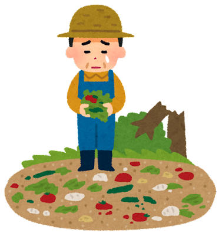
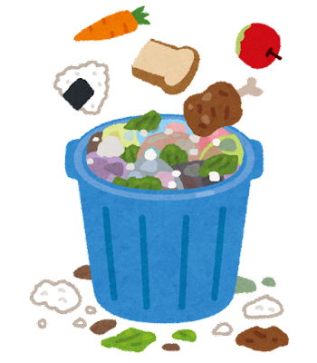

生產初期的損耗
坐在餐桌前享用美食的你，是否曾想過這些食物到你手中之前，經歷了哪些事呢？
食物的損耗有許多種，並發生在食物鏈的各個階段中，從種植、生產、加工、配銷，到零售和消費。

食物的損耗最早出現在生產環節，即在農夫、麵包師、漁夫等的生產現場。原因包括天候、蟲害、黴菌等情況，或由於處理、運輸和儲存不當所造成。

品質要求是造成食物浪費的另一個原因，可惜這樣的浪費與食物本身的風味或營養成分無關。
零售商要求「完美」的食物，因此根據大小、形狀和外觀，對水果、綠色蔬菜、根莖作物等進行分類。
如果外觀不符合所要求的標準，產品就會被丟棄，導致為求保險而造成生產過剩。
食品業的產品浪費現象可出現在加工生產線上的產品轉換過程中，或由生產失誤或原料損壞造成。
批發階段的損失則出現在儲存、裝卸及運輸的過程，或因產品超過了保存期限而產生。若在運輸階段使得外型遭到碰撞、損傷，則也可能使得食物、食品因外觀不佳導致無法售出而被浪費。
水果、蔬菜、麵包、魚及貝類食物等生鮮食品的供應過剩意味著它們會被大量丟棄。批發商的食物浪費有大部分是被商店退回的產品。
消費者不瞭解最遲銷售日期的意義以及處於最佳食用時期的水果樣貌等，也都造成了商店將優質貨品丟棄。
標示日期意味著大量食品會被商店丟棄，因為消費者會儘量挑選保存期限長的食品，而不去購買接近保存期限的食品。有時商店會以半價出清這類產品，不過通常是丟入垃圾箱，或在退回給供應商後被丟棄。

消費者將食物丟棄的主要原因是，我們準備得太多，例如太多的飯、麵類或馬鈴薯；麵包、 水果和蔬菜保存不當或存放過久。有孩子的家庭還有更多吃剩的熟食、喝剩的乳品被直接倒入水槽 。對許多人來說，食品超過了最佳食用日期就應該扔掉。